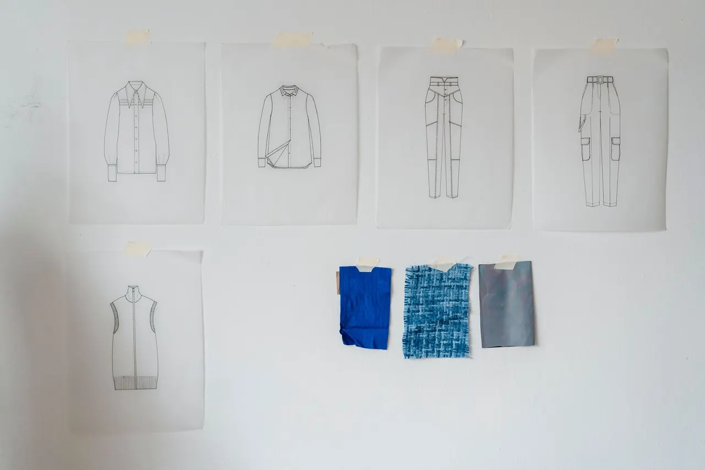
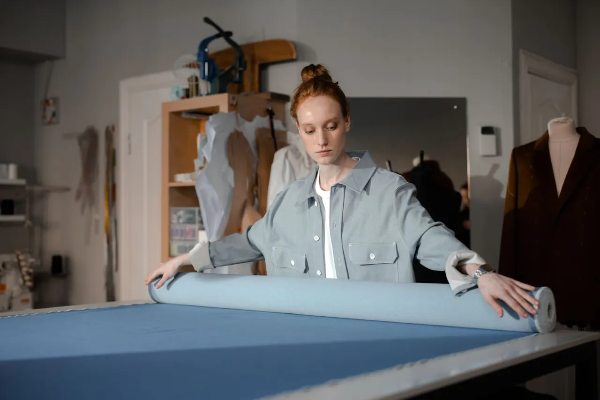
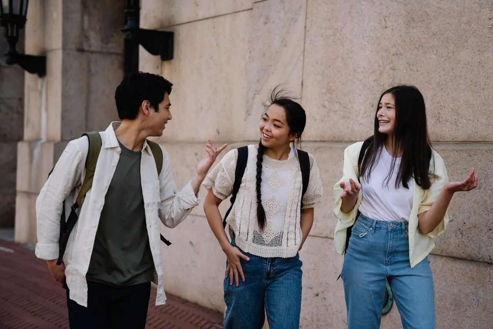
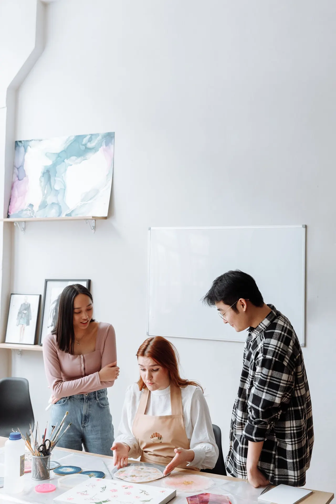

Enter the HTAFL world
Create. Overcome. Connect.
Three connected ways to express yourself, practice resilience and find connection.

Expression
into possibility.
Explore expression through material, image, personal style and everyday creative practice.


Move. Reflect.
Reset. Try again.
Explore small, adaptable practices at your own pace. Participation can be quiet, private and entirely your own.

You don’t have
to grow alone.
Different stories. Shared strength. Listen, share an idea, or offer encouragement.
